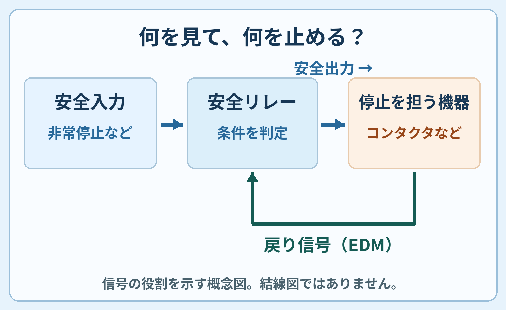
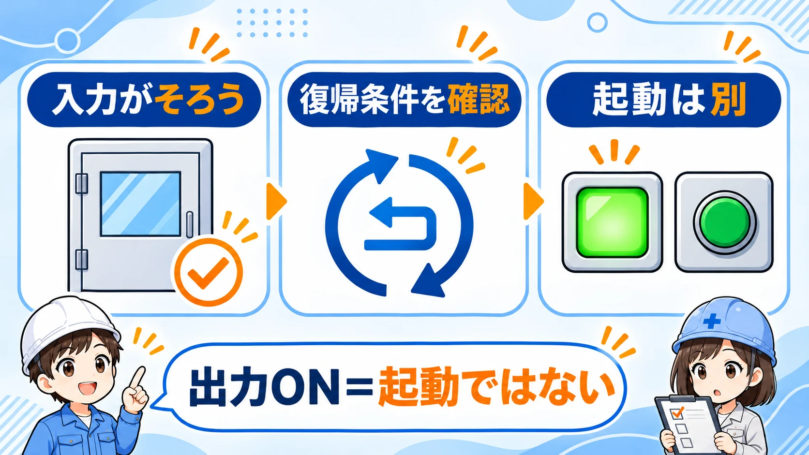
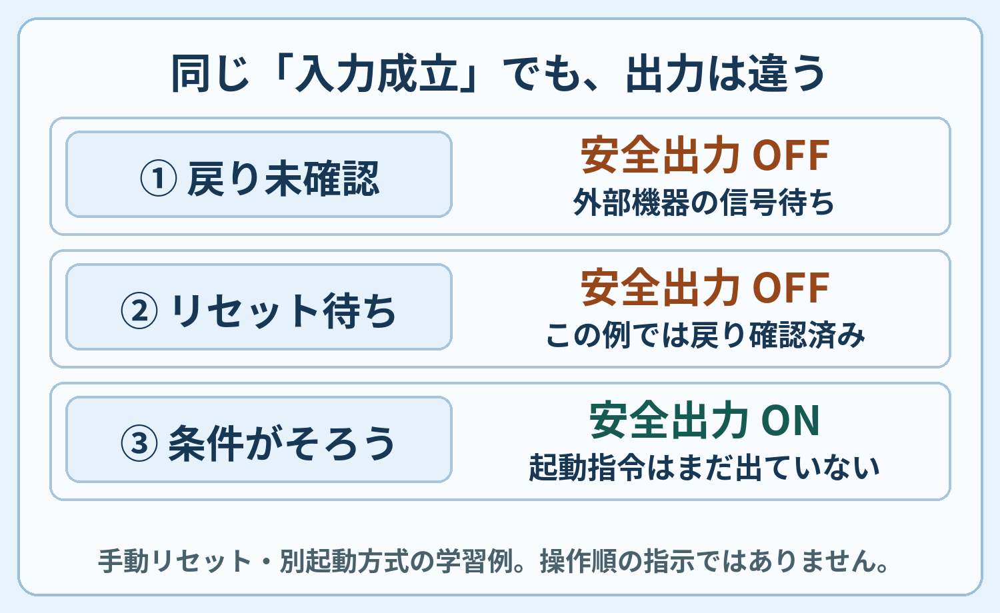
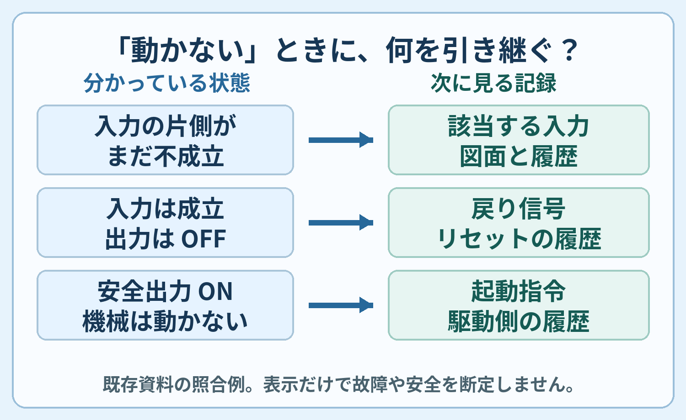

1. 先に結論
最終内容更新：
安全リレーは、非常停止などの入力と、設計で定めた復帰条件を見て、安全出力を制御する部品です。入力が戻った・安全出力が戻った・機械が起動したは、別々の状態です。

後輩入力表示が二つ点いたのに、安全出力は戻っていません。もう故障ですか？

先輩それだけでは決まらないよ。外部機器の戻り信号と、リセットの成立を別々に見よう。
後輩なるほど。出力が戻っても「起動した」とは書かないんですね。
2. 安全リレーとは
安全リレーユニットは、機械を停止側に導く仕組みの一部です。安全入力を監視し、入力が停止を要求したとき、設計された停止の仕方に従って安全出力を切ります。


普通のリレーとの違い
普通のリレーは、コイルで接点を切り替える部品です。ここで扱う安全リレーユニットは、2系統の入力や復帰条件を監視する機能を持ちます。普通のリレーと置き換えれば同じ機能になる、という関係ではありません。
3. 安全リレーが見るもの
非常停止、扉、ライトカーテンは停止を要求する側。リセットは、決められた復帰条件のもとで安全機能を復帰させるための入力です。機器の名前が似ていても役割は同じではありません。
非常停止スイッチ
操作すると停止を要求します。解除しても、解除そのものを起動指令にはしません。
安全ドアスイッチ
ガードの状態を安全機能へ伝えます。扉が閉まった表示は、人が危険区域にいない証明ではありません。
ライトカーテン
検出面を遮ったことを、安全機能に伝える機器の例です。
リセットスイッチ
手動リセット方式の例。設備の手順に従って安全を確認したうえで行う復帰操作を、起動とは分けます。
4. 安全入力・戻り信号・安全出力を分けて読む
- CH1 / CH2：2系統を監視する例です。どちらも成立していても、それだけで出力がONするとは限りません。
- EDM（外部機器監視）：外部コンタクタなどの戻り信号を見て、設計上の期待状態か確認します。人の有無や停止完了を検知する機能ではありません。
- 安全出力：設計に応じてコンタクタやSTOなどへ停止要求を伝えます。出力の表示だけでは、機械の停止完了や無電圧は確認できません。
例えば、コンタクタが停止側に戻っていない場合や、戻り信号が届いていない場合は、復帰条件が成立しないことがあります。戻り信号が確認できないだけで、接点の溶着とは断定できません。
5. リセットとEDM：三つの状態を比べる
非常停止で止まった小型搬送機の、手動リセットと別の起動操作を備える仮想例です。設備の操作手順ではなく、表示や記録の違いを読むための例です。

- 入力成立・戻り未確認：CH1 / CH2の条件は戻っていても、EDMの条件がそろっておらず、安全出力はOFFです。
- 戻り確認済み・リセット待ち：この例では戻り信号も成立していますが、手動リセット条件がまだ成立しておらず、安全出力はOFFです。
- 出力ON・起動は未指令：設計で定めた復帰条件を満たして安全出力は復帰しましたが、別の起動指令は出ていません。電力や圧力が隔離されたことも意味しません。
オムロン G9SE-201 で読むなら
公式資料では安全入力1・2がともにONであることは必要条件で、それだけでは足りません。手動とオートでフィードバック・リセット入力の判定が異なります。オートで安全出力が自動で復帰する構成でも、機械をそれだけで再起動させない設計は別の話です。上の仮想例はメーカー配線例の再現ではありません。
6. 復帰しない時、既存の記録をどこから読む？
図面と承認済みの点検記録、通常の操作場所から読める表示を照らし合わせます。盤を開けて活線を測る、動作を再現する、リセットを繰り返すための手順ではありません。

- 電源や入力の成立を確認できない：電源表示・エラー履歴・CH1 / CH2の記録をまず確認します。片側だけなら、どの入力の記録かを図面で照合します。LEDの点滅は正常な点灯と区別し、対象型式の資料で読みます。
- 入力成立、出力はOFF：外部機器の戻り信号と、手動リセット条件を分けて既存の記録で確認します。記録なしは「未確認」で、「成立」でも「故障」でもありません。
- 安全出力はON、機械は動かない：安全出力表示と、起動指令や駆動側の状態を分けて引き継ぎます。コンタクタ・STOだけでなく、運転条件や駆動側のエラーも設備固有の資料で確認します。
7. 表示の確認と、機械が安全かの確認は別
安全出力OFFでも、慣性で動きが続いたり、保持された圧力や重力による危険が残ったりします。STOも、電源を電気的に隔離したという意味ではありません。
危険区域への立入り・保守の判断に使わない
入力や戻り信号を強制したり、安全機能を無効にしたりしません。不明な状態では復旧を進めず、設備の責任者に記録を引き継ぎます。立入り・保守に必要な危険源の隔離や残留エネルギーの確認は、設備のリスク評価と承認済みの手順に従います。安全カテゴリ、PL、SILは機器単体の表示から判定しません。
8. まとめ
- 安全入力の成立は、安全出力復帰の条件の一部です。
- EDMの戻り信号・リセット・別の起動指令は、役割を分けて読みます。
- 出力やLEDの状態を、機械の停止完了や立入りの安全確認に使いません。
確認した公式資料
公式資料確認：
- オムロン：G9SE セーフティリレーユニット カタログ（「入出力の配線について」「使用用途例」の動作説明）
- オムロン：G9SE トラブルシューティング（型式別の表示）
- 厚生労働省：機械の包括的な安全基準に関する指針（別表第2・別表第4）
- 三菱電機：FREQROL-D700 セーフティストップ機能（STOによるトルク遮断）